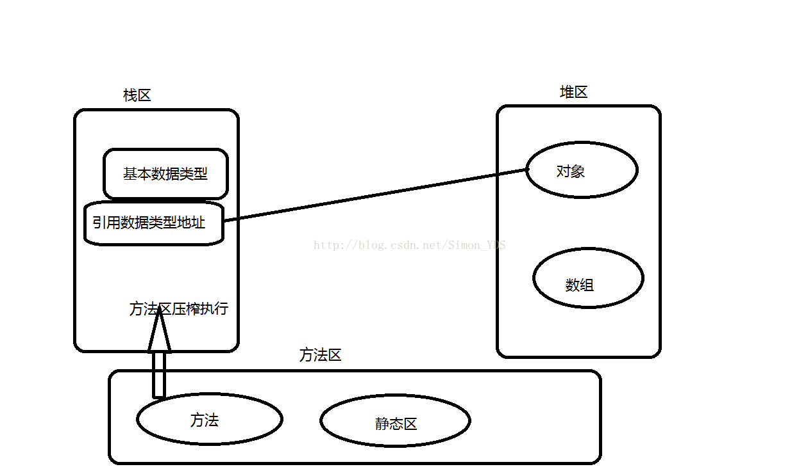

JVM内存结构：堆、栈、方法区
一、定义
1、堆：FIFO队列优先，先进先出。jvm只有一个堆区被所有线程所共享！堆存放在二级缓存中，调用对象的速度相对慢一些，生命周期由虚拟机的垃圾回收机制定。
2、栈：FILO先进后出，暂存数据的地方。每个线程都包含一个栈区！栈存放在一级缓存中，存取速度较快，“栈是限定仅在表头进行插入和删除操作的线性表”。
3、方法区：用来存放方法和static变量。
二、存储的数据类型
1、堆用来存储new出来的对象和数组
2、栈用来存储基本类型变量和对象的引用变量的地址
3、方法区存储方法和static变量
三、优缺点
1、堆的优点-可以动态的分配内存大小，生命周期不确定。缺点-速度略慢
2、栈的优点-速度快，缺点-存在栈中的数据大小和生命周期必须是明确的，缺少灵活性。

四、直接内存
直接内存并不是虚拟机运行时数据区的一部分，也不是Java 虚拟机规范中农定义的内存区域。在JDK1.4 中新加入了NIO(New Input/Output)类，引入了一种基于通道(Channel)与缓冲区（Buffer）的I/O 方式，它可以使用native 函数库直接分配堆外内存，然后通脱一个存储在Java堆中的DirectByteBuffer 对象作为这块内存的引用进行操作。这样能在一些场景中显著提高性能，因为避免了在Java堆和Native堆中来回复制数据。
本机直接内存的分配不会受到Java 堆大小的限制，受到本机总内存大小限制
配置虚拟机参数时，不要忽略直接内存 防止出现OutOfMemoryError异常
直接内存（堆外内存）与堆内存比较
- 直接内存申请空间耗费更高的性能，当频繁申请到一定量时尤为明显
- 直接内存IO读写的性能要优于普通的堆内存，在多次读写操作的情况下差异明显
代码验证：
package com.youyuan.web.controller.user;
import java.nio.ByteBuffer;
/**
* 直接内存 与 堆内存的比较
*/
public class ByteBufferCompare {
public static void main(String[] args) {
allocateCompare(); //分配比较
operateCompare(); //读写比较
}
/**
* 直接内存 和 堆内存的 分配空间比较
* <p>
* 结论： 在数据量提升时，直接内存相比非直接内的申请，有很严重的性能问题
*/
public static void allocateCompare() {
int time = 10000000; //操作次数
long st = System.currentTimeMillis();
for (int i = 0; i < time; i++) {
//ByteBuffer.allocate(int capacity) 分配一个新的字节缓冲区。
ByteBuffer buffer = ByteBuffer.allocate(2); //非直接内存分配申请
}
long et = System.currentTimeMillis();
System.out.println("在进行" + time + "次分配操作时，堆内存 分配耗时:" + (et - st) + "ms");
long st_heap = System.currentTimeMillis();
for (int i = 0; i < time; i++) {
//ByteBuffer.allocateDirect(int capacity) 分配新的直接字节缓冲区。
ByteBuffer buffer = ByteBuffer.allocateDirect(2); //直接内存分配申请
}
long et_direct = System.currentTimeMillis();
System.out.println("在进行" + time + "次分配操作时，直接内存 分配耗时:" + (et_direct - st_heap) + "ms");
}
/**
* 直接内存 和 堆内存的 读写性能比较
* <p>
* 结论：直接内存在直接的IO 操作上，在频繁的读写时 会有显著的性能提升
*/
public static void operateCompare() {
int time = 1000000000;
ByteBuffer buffer = ByteBuffer.allocate(2 * time);
long st = System.currentTimeMillis();
for (int i = 0; i < time; i++) {
// putChar(char value) 用来写入 char 值的相对 put 方法
buffer.putChar('a');
}
buffer.flip();
for (int i = 0; i < time; i++) {
buffer.getChar();
}
long et = System.currentTimeMillis();
System.out.println("在进行" + time + "次读写操作时，非直接内存读写耗时：" + (et - st) + "ms");
ByteBuffer buffer_d = ByteBuffer.allocateDirect(2 * time);
long st_direct = System.currentTimeMillis();
for (int i = 0; i < time; i++) {
// putChar(char value) 用来写入 char 值的相对 put 方法
buffer_d.putChar('a');
}
buffer_d.flip();
for (int i = 0; i < time; i++) {
buffer_d.getChar();
}
long et_direct = System.currentTimeMillis();
System.out.println("在进行" + time + "次读写操作时，直接内存读写耗时:" + (et_direct - st_direct) + "ms");
}
}输出：
在进行10000000次分配操作时，堆内存 分配耗时:12ms
在进行10000000次分配操作时，直接内存 分配耗时:8233ms
在进行1000000000次读写操作时，非直接内存读写耗时：4055ms
在进行1000000000次读写操作时，直接内存读写耗时:745ms
可以自己设置不同的time 值进行比较
分析
从数据流的角度，来看
非直接内存作用链:
本地IO –>直接内存–>非直接内存–>直接内存–>本地IO
直接内存作用链:
本地IO–>直接内存–>本地IO
直接内存使用场景
- 有很大的数据需要存储，它的生命周期很长
- 适合频繁的IO操作，例如网络并发场景
参考
《深入理解Java虚拟机》 –周志明
博文：https://www.cnblogs.com/xing901022/p/5243657.html (rel=undefined)